정보처리기사(구) (2018-04-28 기출문제)
1과목: 데이터 베이스
1. 릴레이션에 포함되어 있는 튜플의 수는?
- Cardinality
- Schema
- Type
- Degree
(정답률: 84%)

2. 다음 자료를 버블 정렬을 이용하여 오름차순으로 정렬할 경우 PASS 2의 수행 결과는?
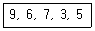
- 3, 5, 6, 7, 9
- 6, 7, 3, 5, 9
- 3, 5, 9, 6, 7
- 6, 3, 5, 7, 9
(정답률: 76%)
3. 릴레이션의 R의 차수가 4이고 카디널리티가 5이며, 릴레이션의 S의 차수가 6이고 카디 널리티가 7일 때, 두 개의 릴레이션을 카티션 프로덕트한 결과의 새로운 릴레이션의 차수와 카디널리티는 얼마인가?
- 24, 35
- 24, 12
- 10, 35
- 10, 12
(정답률: 65%)
4. What are general configuration of indexed sequential file?
- Index area, Mark area, Overflow area
- Index area, Prime area, Overflow area
- Index area, Mark area, Excess area
- Index area, Prime area, Mark area
(정답률: 61%)
5. 데이터베이스 설계 시 물리적 설계 단계에서 수행하는 사항이 아닌 것은?
- 저장 레코드 양식 설계
- 레코드 집중의 분석 및 설계
- 접근 경로 설계
- 목표 DBMS에 맞는 스키마 설계
(정답률: 75%)
6. 다음 그림에서 트리의 차수(degree)는?
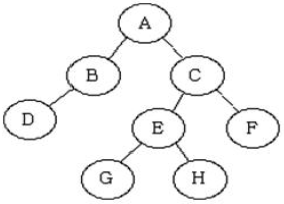
- 1
- 2
- 3
- 4
(정답률: 80%)
7. 릴레이션에서 기본 키를 구성하는 속성은 널(Null)값이나 중복 값을 가질 수 없다는 것을 의미하는 제약조건은?
- 참조 무결성
- 보안 무결성
- 개체 무결성
- 정보 무결성
(정답률: 87%)
8. 다음은 관계형 데이터베이스의 키(Key)를 설명하고 있다. 해당되는 키는?
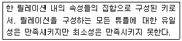
- 후보키
- 대체키
- 슈퍼키
- 외래키
(정답률: 63%)
9. “회사원”이라는 테이블에서 “사원명”을 검색할 때, “연락번호”가 Null 값이 아닌 “사원명”을 모두 찾을 경우의 SQL 질의로 옳은 것은?
- SELECT 사원명 FROM 회사원 WHERE
연락번호 != NULL; - SELECT 사원명 FROM 회사원 WHERE
연락번호 ＜＞= NULL; - SELECT 사원명 FROM 회사원 WHERE
연락번호 IS NOT NULL; - SELECT 사원명 FROM 회사원 WHERE
연락번호 DON'T NULL;
(정답률: 84%)
10. 다음 SQL문의 실행결과를 가장 옳게 설명한 것은?
- 인사 테이블을 제거한다.
- 인사 테이블을 참조하는 테이블과 인사테이블을 제거한다.
- 인사 테이블이 참조중이면 제거하지 않는다.
- 인사 테이블을 제거할 지의 여부를 사용자에게 다시 질의한다.
(정답률: 83%)
11. 병행제어의 목적으로 옳지 않은 것은?
- 시스템 활용도를 최대화
- 데이터베이스 공유도 최대화
- 사용자에 대한 응답시간 최대화
- 데이터베이스의 일관성 유지
(정답률: 86%)
12. 로킹 단위가 큰 경우에 대한 설명으로 옳은 것은?
- 로킹 오버헤드 증가, 데이터베이스 공유도 저하
- 로킹 오버헤드 감소, 데이터베이스 공유도 저하
- 로킹 오버헤드 감소, 데이터베이스 공유도 증가
- 로킹 오버헤드 증가, 데이터베이스 공유도 증가
(정답률: 65%)
13. SQL 구문에서 “having” 절은 반드시 어떤 구문과 사용되어야 하는가?
- GROUP BY
- ORDER BY
- UPDATE
- JOIN
(정답률: 80%)
14. 데이터의 중복으로 인하여 관계연산을 처리할 때 예기치 못한 곤란한 현상이 발생하는 것을 무엇이라 하는가?
- 이상(Anomaly)
- 제한(Restriction)
- 종속성(Dependency)
- 변환(Translation)
(정답률: 87%)
15. 정점이 5개인 방향 그래프가 가질 수 있는 최대 간선수는? (단, 자기간선과 중복간선은 배제한다.)
- 7개
- 10개
- 20개
- 27개
(정답률: 51%)
16. DBA가 사용자 Park에게 테이블A의 데이터를 갱신할 수 있는 시스템 권한을 부여하고자 하는 SQL문을 작성하고자 한다. 다음에 주어진 SQL문의 빈칸에 알맞게 채운 것은?
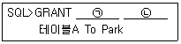
- ㉠ INSERT, ㉡ INTO
- ㉠ ALTER, ㉡ TO
- ㉠ UPDATE, ㉡ ON
- ㉠ REPLACE, ㉡ IN
(정답률: 72%)
17. 다음 Postfix 연산식에 대한 연산결과로 옳은 것은?
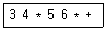
- 35
- 42
- 77
- 360
(정답률: 84%)
18. 정규화 과정에서 A→B 이고 B→C 일 때 A→C 인 관계를 제거하는 단계는?
- 1NF → 2NF
- 2NF → 3NF
- 3NF → BCNF
- BCNF →4NF
(정답률: 69%)
19. 다음 트리에 대한 INORDER 운행 결과는?
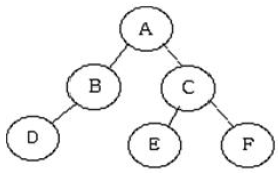
- D B A E C F
- A B D C E F
- D B E C F A
- A B C D E F
(정답률: 67%)
20. 관계대수에 대한 설명으로 옳지 않은 것은?
- 원하는 릴레이션을 정의하는 방법을 제공하며 비절차적 언어이다.
- 릴레이션 조작을 위한 연산의 집합으로 피연산자와 결과가 모두 릴레이션이다.
- 일반 집합 연산과 순수 관계 연산으로 구분된다.
- 질의에 대한 해를 구하기 위해 수행해야 할 연산의 순서를 명시한다.
(정답률: 71%)
2과목: 전자 계산기 구조
21. 다중처리기를 사용하여 성능개선을 하고자 하는 것 중 주된 목표가 아닌 것은?
- 유연성
- 신뢰성
- 대중성
- 수행속도
(정답률: 63%)
22. CPU에 의해 참조되는 각 주소는 가상주소를 주기억장치의 실제주소로 변환하여야 한다. 이것을 무엇이라 하는가?
- mapping
- blocking
- buffering
- interleaving
(정답률: 66%)
23. 두 데이터의 비교(Compare)를 위한 논리연산은?
- XOR 연산
- AND 연산
- OR 연산
- NOT 연산
(정답률: 62%)
24. 논리곱(minterm)으로 표시된 다음 불대수(boolean function)를 간략화 한 것은?(단, d 함수는 don't care 임)
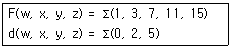
- w x + y
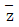
 z + y z
z + y z z + y
z + y 
- w
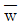
+ y z
(정답률: 33%)
25. 2개 이상의 프로그램을 주기억장치에 기억시키고 CPU를 번갈아 사용하면서 처리하여 컴퓨터 시스템 자원 활용률을 극대화하기 위한 프로그래밍 기법은?
- 분산처리 프로그래밍
- 일괄처리 프로그래밍
- 멀티 프로그래밍
- 리얼타임 프로그래밍
(정답률: 47%)
26. 수직적 마이크로명령어에 대한 설명으로 틀린 것은?
- 마이크로명령어의 비트 수가 감소된다.
- 제어 기억장치의 용량을 줄일 수 있다.
- 마이크로 명령어의 코드화된 비트들을 해독하기 위한 지연이 발생한다.
- 마이크로명령어의 각 비트가 각 제어신호에 대응되도록 하는 방식이다.
(정답률: 28%)
27. 입력단자가 하나이며, 1이 입력될 때마다 출력단자의 상태가 바뀌는 플립플롭의 종류는?
- RS
- T
- D
- M/S
(정답률: 49%)
28. 컴퓨터 시스템에서 1-address machine, 2-address machine, 3-address machine으로 나눌 때 기준이 되는 것은?
- operation code
- 기억장치의 크기
- register 수
- operand의 address 수
(정답률: 54%)
29. 일반적인 제어 장치 모델에서 제어 장치로 입력되는 항목이 아닌 것은?
- CPU 내의 제어 신호들
- 클록
- 명령어 레지스터
- 플래그
(정답률: 27%)
30. Interrupt cycle에 대한 마이크로 오퍼레이션(micro-operation) 중에서 가장 관계가 없는 것은?(단, MAR : Memory Address Register, PC : Program Counter, M : memory, MBR : Memory Buffer Register, IEN : Interrupt Enable 이며, Interrupt Handler는 0 번지에 저장 되어있다고 가정한다.)
- MAR ← PC, PC ← PC + 1
- MBR ← MAR, PC ← 0
- M ← MBR, IEN ← 0
- GO TO fetch cycle
(정답률: 32%)
31. 4x2 RAM을 이용하여 16x4 메모리를 구성하고자 할 경우에 필요한 4x2 RAM의 수는?
- 4개
- 8개
- 16개
- 32개
(정답률: 55%)
32. 캐시의 라인 교체 정책 가운데, 최근에 가장 적게 사용된 라인부터 교체하는 정책은? (문제 오류로 실제 시험에서는 1, 3번이 정답처리 되었습니다. 여기서는 1번을 누르면 정답 처리 됩니다.)
- LRU
- FIFO
- LFU
- LIFO
(정답률: 65%)
33. 10진수 –14를 2의 보수 표현법을 이용하여 8비트 레지스터에 저장하였을 때, 이를 오른쪽으로 1비트 산술 시프트 했을 때의 결과는?
- 10000111
- 00000111
- 11111001
- 01111001
(정답률: 38%)
34. 다음은 DMA의 데이터 전송 절차를 나열한 것이다. 순서를 가장 옳게 나열한 것은?
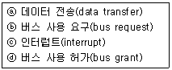
- ⓐ → ⓑ → ⓒ → ⓓ
- ⓒ → ⓑ → ⓓ → ⓐ
- ⓑ → ⓓ → ⓐ → ⓒ
- ⓓ → ⓒ → ⓑ → ⓐ
(정답률: 35%)
35. 병렬컴퓨터에서 처리요소의 성능을 측정하는데 사용되는 단위는?
- MIPS
- BPS
- IPS
- LPM
(정답률: 39%)
36. 다음 중 누산기에 대한 설명으로 가장 옳은 것은?
- 연산장치에 있는 레지스터의 하나로서 연산 결과를 기억하는 장치이다.
- 입출력장치에 있는 회로로서 가감승제 계산 및 논리 연산을 행하는 장치이다.
- 일정한 입력 숫자들을 더하여 그 누계만을 항상 보관하는 장치이다.
- 부동소수점과 같은 정밀 계산을 위해 특별히 만들어 두어 유효 숫자의 개수를 늘리기 위한 것이다.
(정답률: 50%)
37. 다음 중 비교적 속도가 빠른 자기디스크에 연결하는 채널은?
- 바이트 채널
- 셀렉터 채널
- 서브 채널
- 멀티플렉서 채널
(정답률: 40%)
38. ASCⅡ 코드의 비트구성은 존(zone)비트와 수(digit)비트로 구분된다. 존(zone)비트는 몇 비트인가?
- 1비트
- 2비트
- 3비트
- 4비트
(정답률: 36%)
39. 프로그램에 의해 제어되는 동작이 아닌 것은?
- input/output
- branch
- status sense
- RNI(fetch)
(정답률: 28%)
40. 다음 중 프로그램 카운터(PC)에 대한 설명으로 가장 옳은 것은?
- 곱셈과 나눗셈 명령어를 위한 누산기로 사용된다.
- 다음에 인출할 명령어의 메모리 주소를 가지고 있다.
- 고속 메모리 전송명령을 위해 사용된다.
- CPU의 동작을 제어하는 플래그를 가지고 있다.
(정답률: 51%)
3과목: 운영체제
41. 가상기억장치 구현 기법에 대한 설명으로 가장 옳지 않은 것은?
- 가상기억장치 기법은 말 그대로 가상적인 것으로 현재 실무에서는 실현되는 방법이 아니다.
- 가상기억장치를 구현하는 일반적 방법에는 Paging과 Segmentation 기법이 있다.
- 주기억장치의 이용률과 다중 프로그래밍의 효율을 높일 수 있다.
- 주기억장치의 용량보다 큰 프로그램을 실행하기 위해 사용한다.
(정답률: 72%)
42. HRN방식으로 스케줄링 할 경우, 입력된 작업이 다음<표>와 같을 때 우선순위가 가장 높은 것은?
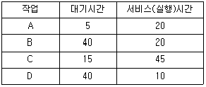
- A
- B
- C
- D
(정답률: 73%)
43. PCB를 갖고 있으며, 현재 실행 중 이거나 곧 실행 가능하며, CPU를 할당받을 수 있는 프로그램으로 정의할 수 있는 것은?
- 워킹 셋
- 세그먼테이션
- 모니터
- 프로세스
(정답률: 73%)
44. 매크로 프로세서가 수행해야 하는 기본적인 기능에 해당하지 않는 것은?
- 매크로 정의 확정
- 매크로 호출 인식
- 매크로 정의 인식
- 매크로 정의 저장
(정답률: 57%)
45. FIFO 스케줄링에서 3개의 작업 도착시간과 CPU 사용시간(burst time)이 다음 표와 같다. 이때 모든 작업들의 평균 반환시간(turn around time)은 약 얼마인가?(단, 소수점 이하는 반올림 처리한다.)
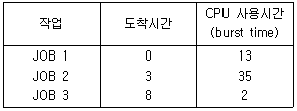
- 16
- 17
- 20
- 33
(정답률: 61%)
46. 운영체제의 성능을 판단 할 수 있는 요소로 가장 거리가 먼 것은?
- 처리 능력
- 비용
- 신뢰도
- 사용가능도
(정답률: 78%)
47. 일반적으로 사용되는 자원 보호 기법의 종류에 해당하지 않는 것은?
- 접근 제어 행렬(Access Control Matrix)
- 접근 제어 리스트(Access Control List)
- 권한 행렬(Capability Matrix)
- 권한 리스트(Capability List)
(정답률: 59%)
48. 비행기 제어, 교통 제어, 레이더 추적 등 정해진 시간에 반드시 수행되어야 하는 작업들이 존재할 때, 가장 적합한 처리방식은?
- Batch processing system
- Time-sharing system
- Real-time processing system
- Distributed processing system
(정답률: 75%)
49. 비선점(Non-Preemptive) 스케줄링에 해당하지 않는 것은?
- SRT(Shortest Remaining Time)
- FIFO(First In First Out)
- 기한부(Deadline)
- HRN(Highest Response-ration Next)
(정답률: 45%)
50. 프로세서의 상호 연결 구조 중 하이퍼 큐브 구조에서 각 CPU가 3개의 연결점을 가질 경우 총 CPU의 개수는?
- 2
- 3
- 4
- 8
(정답률: 64%)
51. 해싱 등의 사상 함수를 사용하여 레코드 키(Record Key)에 의한 주소 계산을 통해 레코드를 접근할 수 있도록 구성한 파일은?
- 순차 파일
- 인덱스 파일
- 직접 파일
- 다중 링 파일
(정답률: 37%)
52. 3개의 페이지 프레임(Frame)을 가진 기억장치에서 페이지 요청을 다음과 같은 페이지 번호 순으로 요청했을 때 교체 알고리즘으로 FIFO 방법을 사용한다면 몇 번의 페이지 부재(Fault)가 발생하는가? (단, 현재 기억장치는 모두 비어 있다고 가정한다.)
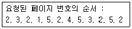
- 7번
- 8번
- 9번
- 10번
(정답률: 60%)
53. 운영체제에서 커널의 기능이 아닌 것은?
- 프로세스 생성, 종료
- 사용자 인터페이스
- 기억 장치 할당, 회수
- 파일 시스템 관리
(정답률: 61%)
54. 시스템 소프트웨어와 그 기능에 대한 설명으로 가장 옳지 않은 것은?
- 로더 : 실행 가능한 프로그램을 기억 장치로 적재
- 링커 : 사용자 프로그램 소스코드와 I/O 루틴과의 결합
- 언어 번역기 : 고급언어로 작성된 사용자 프로그램을 기계어로 번역
- 디버거 : 실행시간 오류가 발생할 경우 기계상태 검사 및 수정
(정답률: 51%)
55. 중앙 컴퓨터와 직접 연결되어 응답이 빠르고 통신 비용이 적게 소요되지만, 중앙 컴퓨터에 장애가 발생되면 전체 시스템이 마비되는 분산 시스템의 위상 구조는?
- 완전연결(fully connected) 구조
- 성형(star) 구조
- 계층(hierarchy) 구조
- 환형(ring) 구조
(정답률: 74%)
56. SJF(Shortest-Job-First) 스케줄링 방법에 대한 설명으로 가장 거리가 먼 것은?
- 작업이 끝날 때까지의 실행시간 추정치가 가장 작은 작업을 먼저 실행시킨다.
- 작업 시간이 큰 경우 오랫동안 대기하여야 한다.
- 각 프로세스의 프로세스 요구시간을 미리 예측하기 쉽다.
- FIFO 기법보다 평균대기시간이 감소된다.
(정답률: 55%)
57. 유닉스의 i-node 에 포함되는 정보가 아닌 것은?
- 디스크 상의 물리적 주소
- 파일 소유자의 사용자 식별
- 파일이 처음 사용된 시간
- 파일에 대한 링크 수
(정답률: 58%)
58. UNIX시스템의 특징으로 가장 옳지 않은 것은?
- 대화식 운영체제이다.
- 쉽게 유지 보수할 수 있는 계층적 파일 시스템을 이용한다.
- 멀티 유저, 멀티 태스킹을 지원한다.
- 디렉터리는 효과적 구현이 가능한 이중 리스트 구조를 사용한다.
(정답률: 65%)
59. 교착상태와 은행원 알고리즘의 불안전상태(Unsafe State)에 대한 설명으로 가장 옳은 것은?
- 교착상태는 불안전상태에 속한다.
- 불안전상태의 모든 시스템은 궁극적으로 교착상태에 빠지게 된다.
- 불안전상태는 교착상태에 속한다.
- 교착상태와 불안전상태는 서로 무관하다.
(정답률: 51%)
60. 운영체제를 기능상 분류했을 때, 제어 프로그램 중 다음 설명에 해당하는 것은?
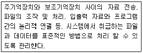
- 문제 프로그램(problem program)
- 감시 프로그램(supervisor program)
- 작업 제어 프로그램(job control program)
- 데이터 관리 프로그램(data management program)
(정답률: 66%)
4과목: 소프트웨어 공학
61. HIPO(Hierarchy Input Process Output)에 대한 설명으로 가장 옳지 않은 것은?
- 상향식 소프트웨어 개발을 위한 문서화 도구이다.
- 구조도, 개요 도표 집합, 상세 도표 집합으로 구성된다.
- 기능과 자료의 의존 관계를 동시에 표현할 수 있다.
- 보기 쉽고 이해하기 쉽다.
(정답률: 60%)
62. 하향식 통합 검사(test)에 대한 설명으로 가장 옳지 않은 것은?
- 시스템구조의 위층에 있는 모듈부터 아래층의 모듈로 내려오면서 통합한다.
- 일반적으로 스터브(stub)를 드라이버(driver)보다 쉽게 작성할 수 있다.
- 검사 초기에는 시스템의 구조를 사용자에게 보여줄 수 없다.
- 상위층에서 검사 사례(test case)를 쓰기가 어렵다.
(정답률: 53%)
63. 소프트웨어 품질 목표 중 쉽게 배우고 사용할 수 있는 정도를 의미하는 개념으로 가장 타당한 것은?
- Reliability
- Usability
- Efficiency
- Integrity
(정답률: 78%)
64. 럼바우(Rumbaugh)의 객체지향 분석 절차를 가장 바르게 나열한 것은?
- 객체 모형 → 동적 모형 → 기능 모형
- 객체 모형 → 기능 모형 → 동적 모형
- 기능 모형 → 동적 모형 → 객체 모형
- 기능 모형 → 객체 모형 → 동적 모형
(정답률: 66%)
65. NS(Nassi-Schneiderman) chart에 대한 설명으로 가장 거리가 먼 것은?
- 논리의 기술에 중점을 둔 도형식 표현 방법이다.
- 연속, 선택 및 다중 선택, 반복 등의 제어논리 구조로 표현한다.
- 주로 화살표를 사용하여 논리적인 제어구조로 흐름을 표현한다.
- 조건이 복합되어 있는 곳의 처리를 시각적으로 명확히 식별하는데 적합하다.
(정답률: 57%)
66. 객체지향 분석에 대한 설명으로 가장 옳지 않은 것은?
- 분석가에게 주요한 모델링 구성요소인 클래스, 객체, 속성, 연산들을 표현해서 문제를 모형화시킬 수 있게 해 준다.
- 객체지향관점은 모형화 표기법의 전후관계에서 객체의 분류, 속성들의 상속, 그리고 메시지의 통신 등을 결합한 것이다.
- 객체는 클래스로부터 인스턴스화 되고, 이 클래스를 식별하는 것이 객체지향분석의 주요한 목적이다.
- E-R 다이어그램은 객체지향분석의 표기법으로는 적합하지 않다.
(정답률: 76%)
67. 바람직한 소프트웨어 설계 지침이 아닌 것은?
- 적당한 모듈의 크기를 유지한다.
- 모듈 간의 접속 관계를 분석하여 복잡도와 중복을 줄인다.
- 모듈 간의 결합도는 강할수록 바람직하다.
- 모듈 간의 효과적인 제어를 위해 설계에서 계층적 자료 조직이 제시되어야 한다.
(정답률: 80%)
68. 소프트웨어 수명주기 모형 중 폭포수 모형에 대한 설명으로 가장 옳지 않은 것은?
- 적용사례가 많다.
- 단계별 정의가 분명하다.
- 단계별 산출물이 명확하다.
- 요구사항의 변경이 용이하다.
(정답률: 81%)
69. 중앙집중형팀(책임프로그래머팀)의 특징으로 가장 거리가 먼 것은?
- 팀 리더의 개인적 능력이 가장 중요하다.
- 조직적으로 잘 구성된 중앙 집중식 구조이다.
- 프로젝트 팀의 목표 설정 및 의사결정 권한이 팀 리더에게 주어진다.
- 팀 구성원 간의 의사교류를 활성화시키므로 팀원의 참여도와 만족도를 증대시킨다.
(정답률: 74%)
70. 다음 검사의 기법 중 종류가 다른 하나는 무엇인가?
- 동치 분할 검사
- 원인 효과 그래프 검사
- 비교 검사
- 데이터 흐름 검사
(정답률: 61%)
71. 객체 지향 기법에서 하나 이상의 유사한 객체들을 묶어서 하나의 공통된 특성을 표현한 것을 무엇이라고 하는가?
- 클래스
- 함수
- 메소드
- 메시지
(정답률: 82%)
72. 객체지향 모형에서 기능 모형(Functional model)의 설계 순서로 가장 옳은 것은?
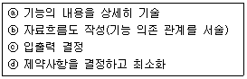
- ⓐ → ⓑ → ⓒ → ⓓ
- ⓐ → ⓒ → ⓑ → ⓓ
- ⓒ → ⓓ → ⓐ → ⓑ
- ⓒ → ⓑ → ⓐ → ⓓ
(정답률: 38%)
73. 비용 예측을 위한 기능 점수 방법에 대한 설명 중 가장 옳지 않은 것은?
- 입력, 출력, 질의, 파일, 인터페이스의 개수로 소프트웨어의 규모를 표현한다.
- 기능 점수는 원시코드의 구현에 이용되는 프로그래밍 언어에 종속적이다.
- 경험을 바탕으로 단순, 보통, 복잡한 정도에 따라 가중치를 부여한다.
- 프로젝트의 영향도와 가중치의 합을 이용하여 실질기능점수를 계산한다.
(정답률: 64%)
74. 자료 사전에서 자료의 반복을 의미하는 것은?
- =
- ( )
- { }
- [ ]
(정답률: 74%)
75. CPM(Critical Path Method) 네트워크에 대한 설명으로 가장 타당하지 않은 것은?
- 프로젝트 작업 사이의 관계를 나타내며 최장경로를 파악할 수 있다.
- 프로젝트 각 작업에 필요한 시간을 정확하게 예측할 수 있다.
- 다른 일정계획안을 시뮬레이션 할 수 있다.
- 병행작업이 가능하도록 계획할 수 있으며, 이를 위한 자원할당도 가능하다.
(정답률: 48%)
76. 소프트웨어 재사용을 통한 장점이 아닌 것은?
- 개발 시간과 비용을 감소시킨다.
- 소프트웨어 품질을 향상시킨다.
- 생산성을 증가시킨다.
- 고급 프로그래머 배출이 용이하다.
(정답률: 82%)
77. 블랙박스 검사 기법에 해당하는 것으로만 나열한 것은?
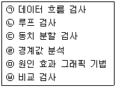
- ㉠, ㉡
- ㉠, ㉡, ㉤, ㉥
- ㉢, ㉣, ㉤, ㉥
- ㉠, ㉢, ㉣, ㉤, ㉥
(정답률: 71%)
78. CASE 도구의 정보저장소(Repository)에 대한 설명으로 가장 거리가 먼 것은?
- 일반적으로 정보저장소는 도구들과 생명주기 활동, 사용자들, 응용 소프트웨어들 사이의 통신과 소프트웨어 시스템 정보의 공유를 향상시킨다.
- 초기의 소프트웨어 개발 환경에서는 사람이 정보저장소 역할을 했지만 오늘날에는 응용 프로그램이 정보저장소 역할을 담당한다.
- 정보저장소는 도구들의 통합, 소프트웨어 시스템의 표준화, 소프트웨어 시스템 정보의 공유, 소프트웨어 재사용성의 기본이 된다.
- 소프트웨어 시스템 구성 요소들과 시스템 정보가 정보저장소에 의해 관리되므로 소프트웨어 시스템의 유지보수가 용이해진다.
(정답률: 61%)
79. 정형 기술 검토(FTR)의 지침 사항으로 가장 옳지 않은 것은?
- 제품의 검토에만 집중한다.
- 문제 영역을 명확히 표현한다.
- 참가자의 수를 제한하고 사전 준비를 강요한다.
- 논쟁이나 반박을 제한하지 않는다.
(정답률: 67%)
80. 객체에 대한 설명으로 가장 옳지 않은 것은?
- 객체는 실세계 또는 개념적으로 존재하는 세계의 사물들이다.
- 객체는 공통적인 특징을 갖는 클래스들을 모아둔 것이다.
- 객체는 데이터를 가지며 이 데이터의 값을 변경하는 함수를 가지고 있는 경우도 있다.
- 객체들 사이에 통신을 할 때는 메시지를 전송한다.
(정답률: 54%)
5과목: 데이터 통신
81. 맨체스터(Manchester) 코딩 방식에 대한 설명으로 옳은 것은?
- 이진신호 0의 경우, 비트구간의 시작지점에 존재
- 이진신호 0의 경우, 비트구간의 오른쪽 1/2지점에 존재
- 이진신호 1의 경우, 이전 비트구간의 역상
- 이진신호 0의 경우, 비트구간의 왼쪽 3/4지점에 존재
(정답률: 50%)
82. HDLC(High-level Data Link Control)의 링크 구성 방식에 따른 세 가지 동작모드에 해당하지 않은 것은?
- PAM
- NRM
- ARM
- ABM
(정답률: 57%)
83. 변조속도가 1500[baud]이며 트리비트를 사용하는 경우 전송속도(bps)는?
- 2400
- 3200
- 4500
- 6000
(정답률: 67%)
84. Go-Back-N ARQ에서 7번째 프레임까지 전송하였는데 수신측에서 6번째 프레임에 오류가 있다고 재전송을 요청해 왔다. 재전송되는 프레임의 개수는?
- 1
- 2
- 3
- 4
(정답률: 65%)
85. IPv6에 대한 설명으로 틀린 것은?
- 더 많은 IP주소를 지원할 수 있도록 주소의 크기는 64비트이다.
- 프로토콜의 확장을 허용하도록 설계되었다.
- 확장 헤더로 이동성을 지원하고, 보안 및 서비스 품질 기능 등이 개선되었다.
- 유니캐스트, 멀티캐스트, 애니캐스트를 지원한다.
(정답률: 60%)
86. 패킷 교환망에 접속되는 단말기 중 비패킷형 단말기(Non-Packet Mode Terminal)에서 패킷의 조립·분해 기능을 제공해 주는 일종의 어댑터는?
- GFI
- PTI
- SVC
- PAD
(정답률: 62%)
87. 부정적 응답에 해당하는 전송제어 문자는?
- NAK(Negative AcKnowledge)
- ACK(ACKnowledge)
- EOT(End of Transmission)
- SOH(Start of Heading)
(정답률: 75%)
88. LAN의 방식 중 “10Base-T”의 10 이 의미하는 것은?
- 케이블의 굵기가 10mm이다.
- 데이터 전송 속도가 10Mbps이다.
- 접속할 수 있는 단말의 수가 10대이다.
- 배선할 수 있는 케이블의 길이가 10m이다.
(정답률: 69%)
89. IP(Internet Protocol) 프로토콜에 대한 설명으로 틀린 것은?
- 비연결 프로토콜이다.
- 최선의 노력(Best Effort) 원칙에 따른 전송 기능을 제공한다.
- IP 패킷이 다른 경로를 통해 전달될 수 있기 때문에 송신된 순서와 다르게 목적지에 도착할 수 있다.
- IP 패킷에서 헤더 체크 섬은 제공하지 않고, 데이터 체크 섬만을 제공한다.
(정답률: 53%)
90. 통신 프로토콜의 기본적인 요소가 아닌 것은?
- 인터페이스
- 구문
- 의미
- 타이밍
(정답률: 54%)
91. 라우팅 프로토콜인 OSPF(Open Shortest Path First)에 대한 설명으로 옳지 않은 것은?
- 네트워크 변화에 신속하게 대처할 수 있다.
- 최단 경로 탐색에 Dijkstra 알고리즘을 사용한다.
- 멀티캐스팅을 지원한다.
- 거리 벡터 라우팅 프로토콜이라고도 한다.
(정답률: 51%)
92. 데이터 전달을 위한 회선 제어 절차의 단계를 순서대로 나열한 것은?
- 데이터 링크 확립 → 회선 연결 → 데이터 전송 → 데이터 링크 해제 → 회선 절단
- 회선 연결 → 데이터 링크 확립 → 데이터 전송 → 데이터 링크 해제 → 회선 절단
- 데이터 링크 확립 → 회선 연결 → 데이터 전송 → 회선 절단 → 데이터 링크 해제
- 데이터 전송 → 회선 절단 → 회선 연결 → 데이터 링크 확립 → 데이터 링크 해제
(정답률: 53%)
93. 실제 전송할 데이터를 갖고 있는 터미널에게만 시간슬롯(Time Slot)을 할당하는 다중화 방식은?
- 디벨로프 다중화
- 주파수 분할 다중화
- 통계적 시분할 다중화
- 광파장 분할 다중화
(정답률: 69%)
94. QPSK 변조방식의 대역폭 효율은 몇 [bps/Hz]인가?
- 2
- 4
- 8
- 16
(정답률: 24%)
95. TCP/IP 프로토콜에서 TCP가 해당하는 계층은?
- 데이터 링크 계층
- 네트워크 계층
- 트랜스포트 계층
- 세션 계층
(정답률: 51%)
96. RIP(Routing Information Protocol)에 대한 설명으로 틀린 것은?
- 거리 벡터 라우팅 프로토콜이라고도 한다.
- 최대 홉 카운트를 115홉 이하로 한정하고 있다.
- 최단경로탐색에는 Bellman-Ford 알고리즘을 사용한다.
- 소규모 네트워크 환경에 적합하다.
(정답률: 56%)
97. OSI 참조모델에서 전이중방식이나 반이중방식으로 종단 시스템의 응용 간 대화(dialog)를 관리하는 계층은?
- Data Link Layer
- Network Layer
- Transport Layer
- Session Layer
(정답률: 43%)
98. 채널용량이 100Kbps이고 채널 대역폭이 10KHz일 때 신호대잡음비(db)는?
- 124
- 423
- 1023
- 4⑤6
(정답률: 62%)
99. IEEE 802.3 LAN에서 사용되는 전송매체 접속제어(MAC) 방식은?
- CSMA/CD
- Token Bus
- Token Ring
- Slotted Ring
(정답률: 67%)
100. 패킷교환 방식에 대한 설명으로 틀린 것은?
- 패킷길이가 제한된다.
- 전송 데이터가 많은 통신환경에 적합하다.
- 노드나 회선의 오류 발생 시 다른 경로를 선택할 수 없어 전송이 중단된다.
- 저장-전달 방식을 사용한다.
(정답률: 54%)